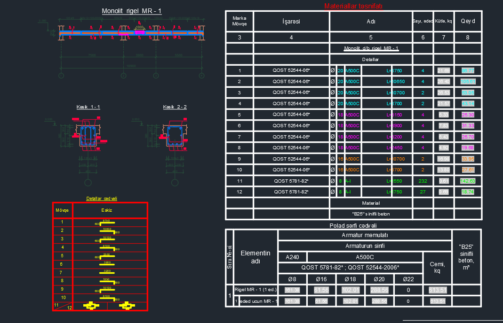

Rgİstifadəyə hazır
Aura Rigel
Rigel açılışı, kəsiklər, detallar və sərf cədvəlləri. Parametrlərdən AutoCAD çertyojuna.
Nəticəyə baxınTəkrarlanan işlərə daha az vaxt.
Layihənizə daha çox diqqət.
Aura Studio — konstruktiv çertyojlar və AutoCAD iş axınları üçün vahid iş məkanı. Bu gün Rigel ilə başlayın, yeni modullarla davam edin.
Giriş hesabı və 3 günlük sınaq üçün bizə yazın.
Hər modulun öz işi və aydın parametrləri var.
Hazır olanla işləyin, yenilikləri buradan izləyin.
Rigel açılışı, kəsiklər, detallar və sərf cədvəlləri. Parametrlərdən AutoCAD çertyojuna.
Nəticəyə baxınSütunların detallandırılması üçün ayrıca iş məkanı. Növbəti modul üzərində işləyirik.
Hədəf: 28 dekabr 2026Örtük çertyojları üçün gələcək modul. İmkanlar inkişaf mərhələsində dəqiqləşəcək.
Tarix daha sonra açıqlanacaqBünövrə iş axınları üçün planlanan alətlər. Daha geniş Aura ekosisteminin növbəti hissəsi.
Tarix daha sonra açıqlanacaqAura Rigel təkrarlanan çertyoj işlərini bir axında birləşdirir. Hesabınıza təyin edilmiş sistem ofisinizin tərtibatına uyğun işləyir.
Önizləmə sxematikdir. Yekun çertyoj mühəndis tərəfindən yoxlanmalıdır. Kəsik və hesabat imkanları Pro/Plus paketinə və təyin edilmiş sistemə bağlıdır.

Hazır modullar, üzərində işlədiklərimiz
və növbəti istiqamətlər bir yerdə.
Windows tətbiqi, parametrik iş axını və AutoCAD nəticəsi istifadədədir.
Sütun modulu hazırlanır. Buraxılışdan əvvəl sınaqlar və son düzəlişlər nəzərdə tutulur.
Yeni modulların əhatəsi və buraxılış tarixləri ayrıca elan ediləcək.
Ofisə uyğun əlavə LISP-lər, Auto PDF və plandan ölçü seçimi kimi iş axınları.
Fərdi iş yerindən komandaya.
Aydın limitlər, seçilən imkanlar.
İllik seçimdə 12 ay üçün 10 aylıq ödəniş hesablanır; limitlər yenə aylıqdır. AutoCAD lisenziyası daxil deyil. Onlayn satış hələ açılmayıb.
Sınaq hesabı, komanda paketi və ofisinizə uyğun sistem üçün bizə yazın.
bextiyar@proton.me